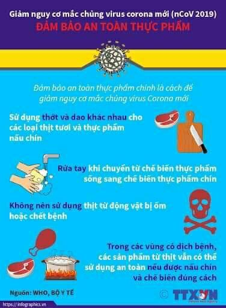
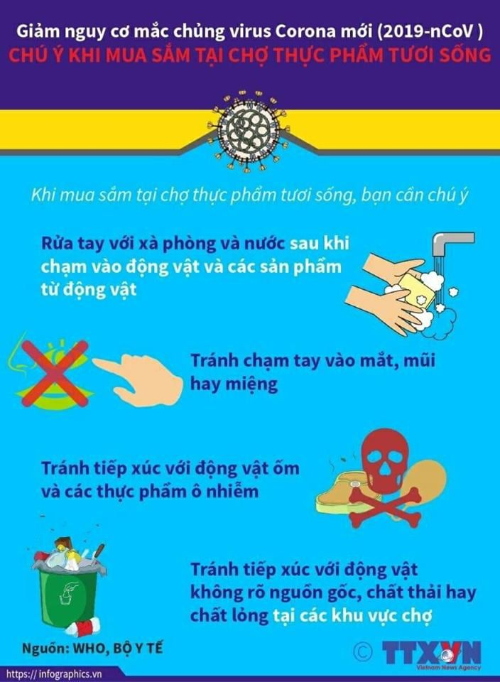
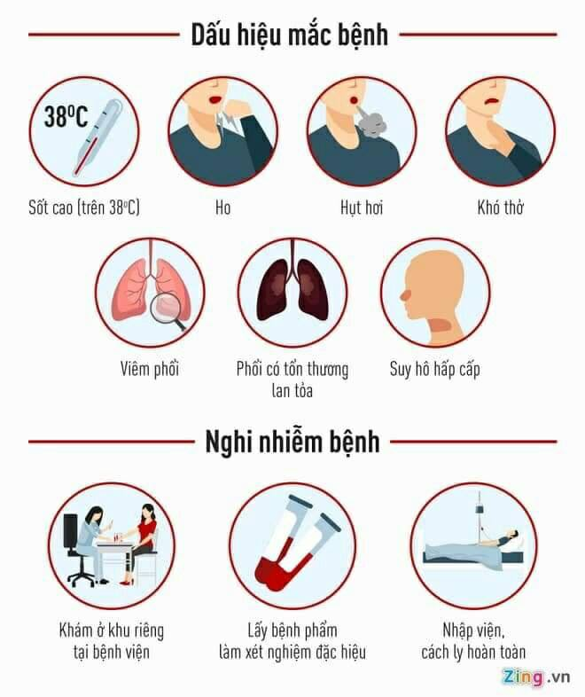

Tuyên truyền dịch bệnh do vi rut corona gây ra
Tuyên truyền dịch bệnh do vi rut corona gây ra
Bài tuyên truyền về phòng chống dịch bệnh viêm đường hô hấp cấp do chủng virus corona mới (2019-nCoV)
Như chúng ta đã biết dịch bệnh viêm đường hô hấp cấp do chủng virus corona mới (2019-nCoV) khởi phát tại thành phố Vũ Hán, thuộc tỉnh Hồ Bắc, Trung Quốc gây ra vẫn đang tiếp tục lây nhiễm với tốc độ nhanh và khó lường. Tại Trung Quốc tính đến ngày 2/2 số ca tử vong tăng lên là 304 người và 14.411 ca nhiễm. Tại Việt Nam , tính đến sáng 2/2 thì có 7 ca nhiễm nCoV.
Dịch bệnh viêm đường hô hấp cấp có thể đến với bất kì ai vì khả năng lây nhiễm rất nhanh. Vì vậy mỗi chúng ta cần thực hiện những biện pháp phòng tránh cần thiết hàng ngày như sau:
- Đeo khẩu trang khi đi tới chỗ đông người ( Bắt buộc 100% Hs từ ngày mai 3/2/2020 phải đeo khẩu trang đến trường; Đeo khẩu trang đúng cách ;Khi cần tiếp xúc với người bệnh, phải đeo khẩu trang y tế và giữ khoảng cách khi tiếp xúc.…)
- Giữ vệ sinh cá nhân, thường xuyên rửa tay khi thấy bẩn,sau khi đi vệ sinh…; tránh đưa tay lên mắt, mũi, miệng. ( nhà trường đã chuẩn bị xà phòng, nước rửa tay ở khu nhà vệ sinhà Yêu cầu Hs sử dụng nghiêm túc…)
- Thường xuyên súc họng bằng nước sát khuẩn miệng.
- Che miệng và mùi khi ho hoặc hắt hơi; tốt nhất bằng khăn vải hoặc khăn tay khi ho hoặc hắt hơi để làm giảm phát tán các dịch tiết đường hô hấp, sau đó hủy hoặc giặt sạch khăn ngay.
- Không đi lễ hội đầu năm, hạn chế tối đa việc đến các nơi đông người
- Tránh tiếp xúc với người bị bệnh đường hô hấp cấp tính.
- Hàng ngày làm vệ sinh sạch sẽ lớp học, bằng cách quét dọn, lau chùi, mở các cửa ra vào và cửa sổ…. Thường xuyên lau nền nhà, tay nắm cửa và bề mặt các đồ vật trong lớp học bằng các chất tẩy rửa thông thường, như xà phòng và các dung dịch khử khuẩn thông thường khác.
- Tăng cường sức khoẻ bằng ăn uống, nghỉ ngơi, sinh hoạt hợp lý, luyện tập thể thao( Ăn chín, uống sôi; Tăng cường uống nhiều nước; bổ sung các thực phẩm, hoa quả chứa vitamin hàng ngày….
- Nếu thấy có biểu hiện của bệnh viêm đường hô hấp cấp tính như ho, sốt...phải thông báo ngay cho cơ sở y tế gần nhất để được tư vấn, cách ly và điều trị kịp thời.
Trên đây là bài viết tuyên truyền về phòng chống dịch bệnh viêm đường hô hấp cấp do chủng nCoV. Qua bài tuyên truyền này ,cô đề nghị các em học sinh trong trường chúng ta thực hiện nghiêm túc các biện pháp mà cô nêu ở trên, tuyên truyền hướng dẫn người thân, những người xung quanh các em thực hiện tốt cách phòng chống dịch bệnh viêm đường hô hấp cấp do chủng virus corona mới để mỗi chúng ta có một cuộc sống khỏe mạnh, bình an!

